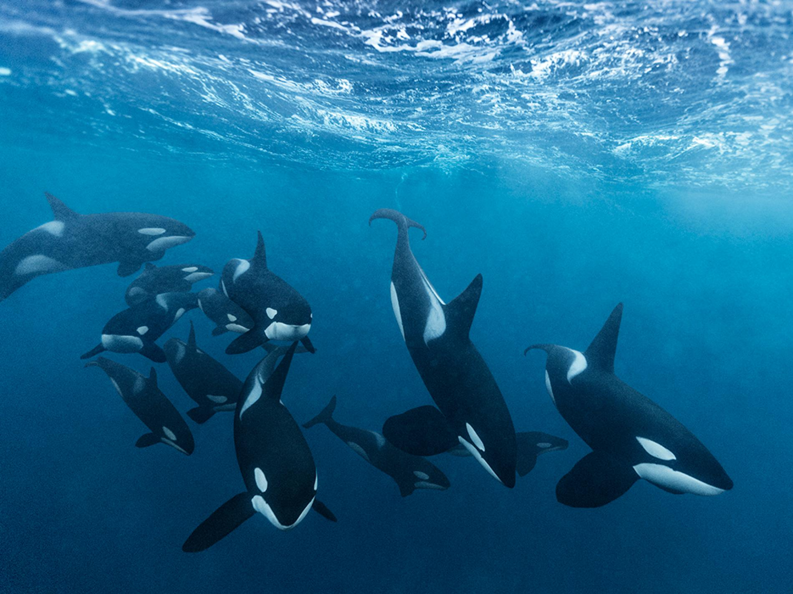

| Orcas are highly social animals, living in close-knit family groups known as pods. These pods typically consist of matrilineal family units, led by an elder female, often the grandmother or mother of the group. Orcas demonstrate a level of familial attachment and cooperation that is rare in the animal kingdom, staying with their families for most, if not all, of their lives.
The strength of the pod lies in its tight bonds, which are maintained through sophisticated communication. Orcas use an array of vocalizations, including clicks, whistles, and pulsing calls, to communicate with one another. Remarkably, different pods have distinct “dialects” that can be recognized by researchers. These unique acoustic patterns further highlight the intelligence and cultural richness of orca communities.
Orcas are renowned for their advanced cognitive abilities, often drawing comparisons to primates and humans. Their large brains, particularly the highly developed limbic system responsible for emotions and social connections, suggest that orcas are not only intelligent but deeply empathetic creatures. Observations have shown orcas displaying behaviors that hint at complex emotions such as grief, joy, and cooperation. One of the most intriguing aspects of their intelligence is their capacity to learn and teach. Orcas are known to pass down hunting techniques and social behaviors from generation to generation, an attribute that qualifies as cultural learning. For instance, young orcas often learn by observing and imitating older, more experienced members of their pod. This ability to adapt and innovate has allowed orcas to thrive in diverse environments, from the icy waters of the Arctic to the warm seas of the tropics. |

|
|  |
Orcas are apex predators, standing at the very top of the marine food chain. However, their success as hunters is not due to sheer size or strength alone—it is their intelligence and ability to work together that make them such formidable predators. Their hunting strategies are highly specialized and vary based on the region and prey available, further demonstrating their adaptability.
In some regions, orcas employ a technique known as "carousel feeding," where they work together to herd schools of fish into tight balls before taking turns to feed. In Arctic waters, orcas have been observed creating waves to knock seals off floating ice, showcasing a combination of ingenuity and teamwork.
Meanwhile, in New Zealand, some orcas specialize in hunting stingrays, demonstrating an ability to target specific prey and develop unique strategies to catch them. One of the most astonishing hunting behaviors involves orcas targeting larger marine mammals like whales.
In coordinated attacks, pods work together to isolate a calf or weaker member of a whale pod, using a mix of speed, agility, and brute force to secure their prey. Such highly coordinated efforts require not only planning but also real-time communication and collaboration, underscoring the depth of their intelligence. Orcas are extraordinary creatures whose intelligence, social bonds, and cooperative behaviors make them one of the ocean's most captivating inhabitants. Their pod-based hunting strategies and cultural learning set them apart as more than just apex predators—they are a testament to the richness of marine life and the evolutionary brilliance of nature. While their intelligence and adaptability have allowed orcas to thrive in diverse ecosystems, they remain vulnerable to human activities and environmental threats, which makes understanding and protecting these majestic animals more important than ever. |